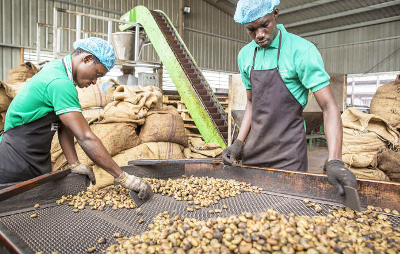
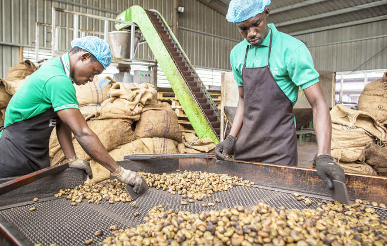
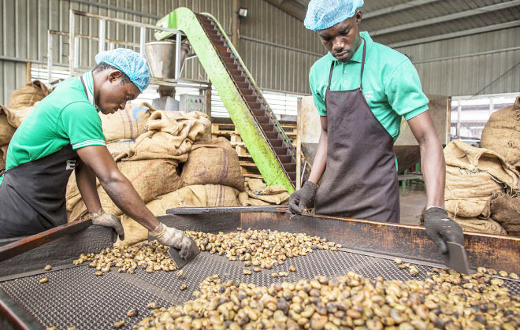
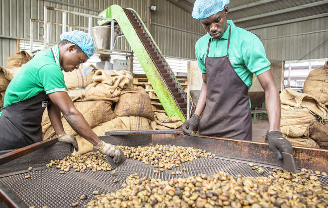

Adress E-mail : AnacardePro@gmail.com
Numéro de téléphone: 01 23 45 67 89
Numéro de téléphone: 01 23 45 67 89
Numéro Fixe: 21 03 45 67 01
Anacarde-Pro, nous produisons nos propres noix de cajou de manière artisanales et locales.
Nos noix de cajou ne sont pas cueillies, mais ramassées une fois à complète maturité. Nous les proposons en circuit court pour vous garantir un maximum de fraîcheur.